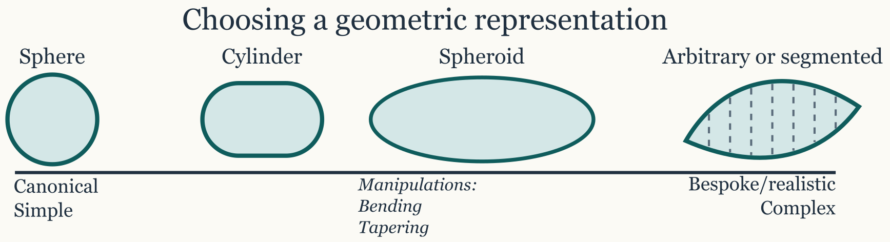
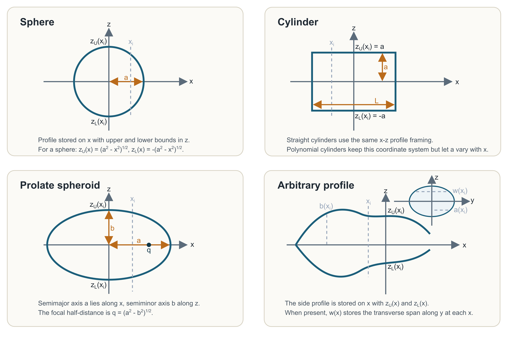

Introduction
The shape pathways on this page are most useful when read against the canonical geometries that dominate the scattering literature, especially spheres, cylinders, spheroids, and piecewise elongated bodies (Waterman 2009; Flammer 1957; Stanton 1988).
Geometry is the first major decision in the package. Before choosing a scatterer class or a target-strength model, it is usually worth deciding whether the target is best represented as a canonical shape or as a segmented arbitrary body. That decision is not just cosmetic. It determines how faithfully the object matches a theory family, how much geometric detail is preserved, and how easy it will be to interpret the response later.
The important point is that shape construction is not the stage where material contrasts or boundary conditions are fixed. At this stage, only the geometric description of the target is being chosen. That separation is intentional. It keeps the geometric question distinct from the physical one and makes it easier to evaluate later whether a modeled response is being driven by morphology, by material properties, or by model assumptions.

Why geometry choice matters
The geometry chosen at this stage strongly influences which later models are natural and which approximations are defensible. A canonical geometry can align very well with an exact or modal-series model, while a segmented arbitrary geometry can align better with a morphology-preserving approximation. Neither option is automatically more correct. The right choice depends on whether the main goal is to preserve measured shape, to stay close to a canonical theory family, or to build a deliberately simplified object for comparison and intuition.
This is why the package keeps shape construction upstream of scatterer generation and model selection. A good workflow begins by deciding how much geometric structure needs to survive into the acoustic problem.
Canonical shape generators
The package includes several geometry constructors for canonical
targets: sphere() for spherical bodies,
cylinder() for straight cylindrical bodies,
prolate_spheroid() for smooth elongated bodies, and
polynomial_cylinder() for parameterized cylindrical
profiles. The convenience wrapper create_shape() can be
used when the goal is to dispatch to one of these canonical builders
through a single interface.
Canonical shapes are especially useful when the geometry itself is part of the model assumption. A spherical target is naturally paired with a spherical theory family, a smooth prolate body aligns naturally with a spheroidal theory family, and a straight finite cylinder aligns naturally with cylindrical model families. In those cases, using a canonical shape is not only convenient. It is often the most physically interpretable choice because the geometry and the mathematical basis are consistent with each other.
Canonical geometry is also useful for comparison studies. If the goal is to understand how two model families differ under controlled conditions, a simple sphere, cylinder, or spheroid often provides a cleaner starting point than a highly detailed arbitrary outline.
The direct generators are usually the clearest interface because they
make the resulting shape class explicit at the call site.
create_shape() is a thin convenience dispatcher rather than
the main pedagogical path.
Coordinate conventions by shape
The package stores shape geometry in a way that is consistent across models, but it is easier to read those objects once the coordinate conventions are made explicit. The schematic below shows the profile view used by the canonical shapes and the side-profile plus cross-section interpretation used by arbitrary shapes.

For sphere(), the geometry is most naturally interpreted
as a profile in the x-z plane with a single radius
a. At any axial coordinate x_i, the upper and
lower boundaries are zU(x_i) and zL(x_i). For
a perfect sphere, those are the positive and negative branches of the
same circular boundary.
For cylinder(), the profile is still expressed in
x-z, but the upper and lower limits are constant over the
body length. In other words, zU(x) = +a and
zL(x) = -a for the straight cylindrical section.
polynomial_cylinder() uses the same coordinate framing, but
lets the radius vary smoothly with x.
For prolate_spheroid(), the semimajor axis lies along
x and the semiminor axis lies along z. The
focal half-distance q appears naturally in the prolate
spheroidal coordinate system, so it is worth showing explicitly even
when the object is generated from the more intuitive axis lengths.
For arbitrary(), the stored side profile is again
defined along x, with zU(x) and
zL(x) describing the upper and lower body bounds. When a
transverse width w(x) is present, it describes the span of
the body in the orthogonal y direction at the same axial
station. In KRM-style uses, that width can also be represented as a
local radius a(x) = w(x) / 2 when the cross-section is
being treated as a disc or ellipse.
Arbitrary and measured shapes
When measured body coordinates or bespoke outlines are available,
arbitrary() is often the most flexible starting point.
Arbitrary shapes are particularly important for elongated biological
targets whose centerline and cross-sectional variation are more
important than exact canonical separability. In those situations,
preserving the morphology may matter more than matching a canonical
coordinate system.
This is one of the main geometric tradeoffs in the package. A canonical shape may offer stronger mathematical alignment with an exact theory family, but it may smooth away anatomical features that are important for an approximate segmented model. An arbitrary shape may preserve those features better, but it may no longer support the same geometry-matched analytical simplifications. The right choice depends on what role the geometry must play in the later acoustic interpretation.
The further a body departs from a separable canonical surface, the stronger the case becomes for preserving the measured morphology rather than forcing the target into an overly simple idealized form.
Canonical surrogates from measured shapes
Sometimes the right workflow is not to choose between a measured
shape and a canonical one at the beginning, but to use both on purpose.
A measured or segmented outline can be preserved first as an
Arbitrary shape and then reduced explicitly to a canonical
surrogate when the goal is to run a shape-specific model such as
SPHMS, PSMS, or FCMS.
That is what canonicalize_shape() is for. It takes an
existing Shape object and fits one of the supported
canonical targets:
SphereCylinderProlateSpheroidOblateSpheroid
This step is deliberately explicit rather than automatic. There is no
single universally correct way to turn a biological or measured target
into a canonical surface. Some workflows want to preserve length and
enclosed volume, while others want the canonical profile that best
matches the measured radius variation. canonicalize_shape()
therefore reports fit diagnostics rather than hiding the approximation
inside the later model call.
In practice, this means a workflow such as:
- build or import the measured shape,
- canonicalize it transparently,
- then run the shape-specific model on the canonical surrogate.
That pattern keeps the model assumptions honest. The later
PSMS or FCMS result can then be interpreted as
the response of the fitted canonical surrogate, not as though the
original irregular target had somehow become exactly separable in
spheroidal or cylindrical coordinates.
Choosing the right level of geometric detail
More detail is not automatically better. Canonical modal models benefit from geometry that matches the separable coordinate system. Segmented approximate models benefit from geometry that matches the intended physical approximation. Screening or exploratory work often benefits from a simpler geometry first, because simpler objects make it easier to distinguish broad physical trends from geometric complications.
That is why the package treats shape construction as a deliberate modeling choice rather than as a purely technical preprocessing step. A very detailed geometry can be helpful when the scientific question depends on curvature, taper, segmentation, or anatomy. The same level of detail can be unnecessary, or even misleading, if the chosen model assumes a much simpler geometry than the object actually contains.
A practical way to choose
A practical way to think about shape choice is to ask what aspect of the target must be preserved for the later model run to remain meaningful. If near-isotropic roundness is the important feature, a sphere is usually sufficient. If the target is smooth and elongated with no sharp geometric transitions, a prolate spheroid may capture the essential structure well. If the body is straight and approximately constant in radius, a finite cylinder may be the most natural simplification. If curvature, taper, segmentation, or anatomy are central to the question, an arbitrary or segmented representation is usually the better starting point.
This way of choosing keeps the geometry tied to the scientific purpose rather than to habit. It also makes later model selection much easier, because the most defensible model families often become obvious once the geometry has been chosen for the right reason.
What to check before moving on
Before turning a shape into a scatterer, it is worth checking whether the geometry is serving the intended role. The object should preserve the body features that matter acoustically, but it should not be more complicated than the planned model interpretation can actually use. Segment density, radius variation, curvature, and overall dimensions should all be visually and numerically sensible. If the object is meant to approximate a canonical surface, it should do so clearly rather than ambiguously.
Those checks help prevent a common mistake in acoustic workflows: building a geometry that is internally reasonable, but poorly aligned with the later physical and mathematical assumptions.
Recommended next step
The next step after geometry construction is usually building scatterers, where material properties, contrasts, and target type are added to the geometric object. That is the stage where a shape becomes a model-ready acoustic target.